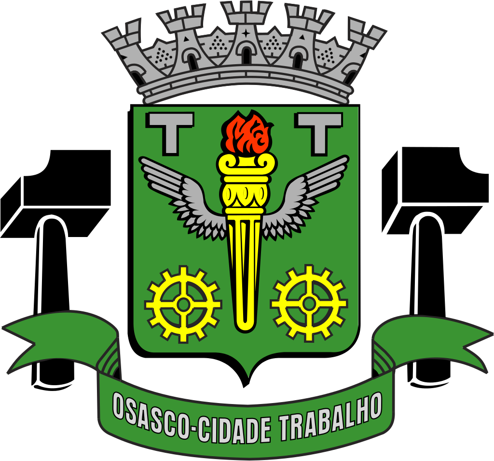
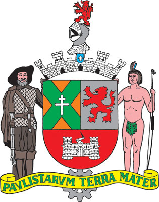
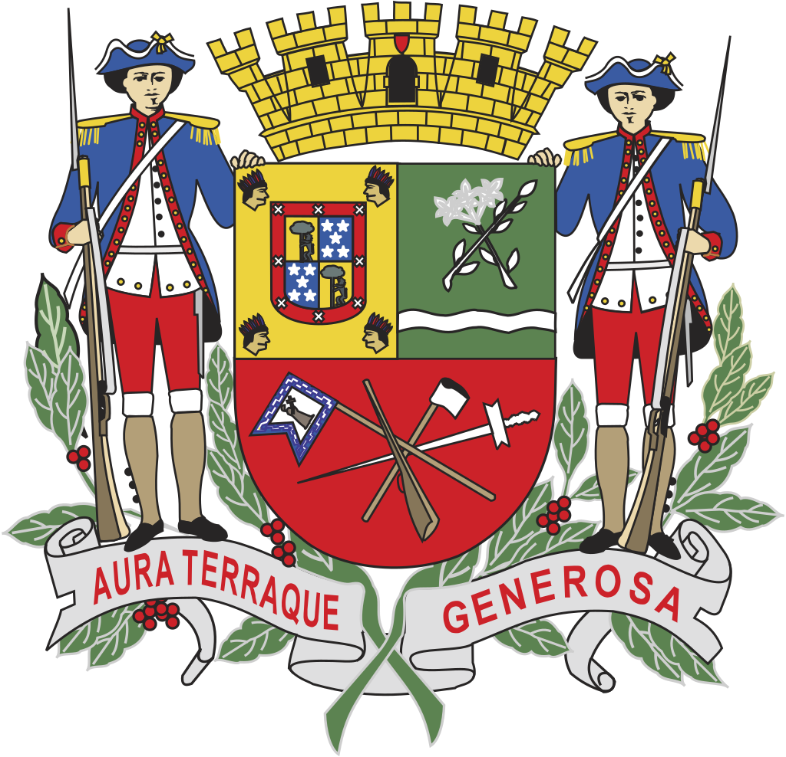
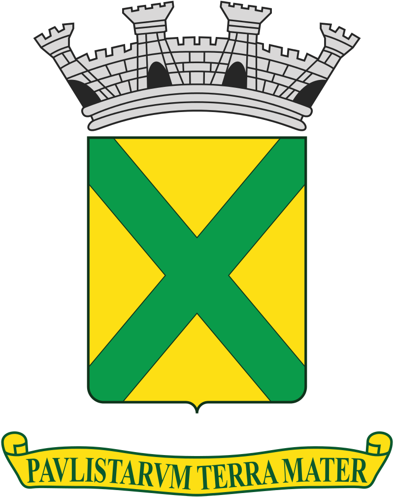
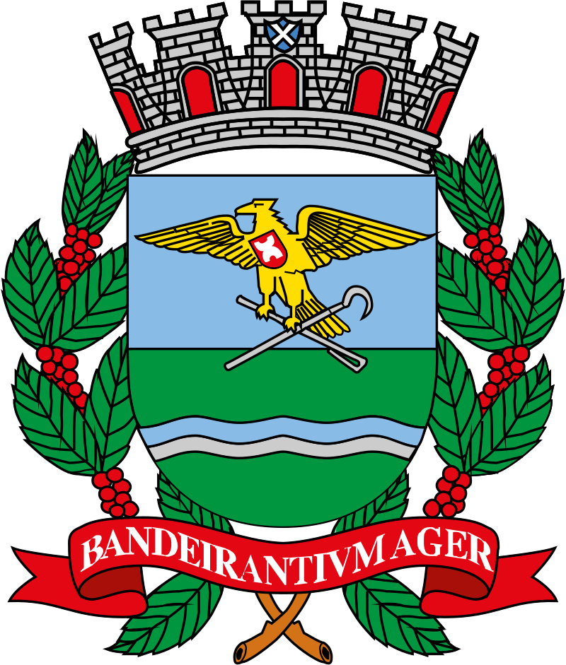
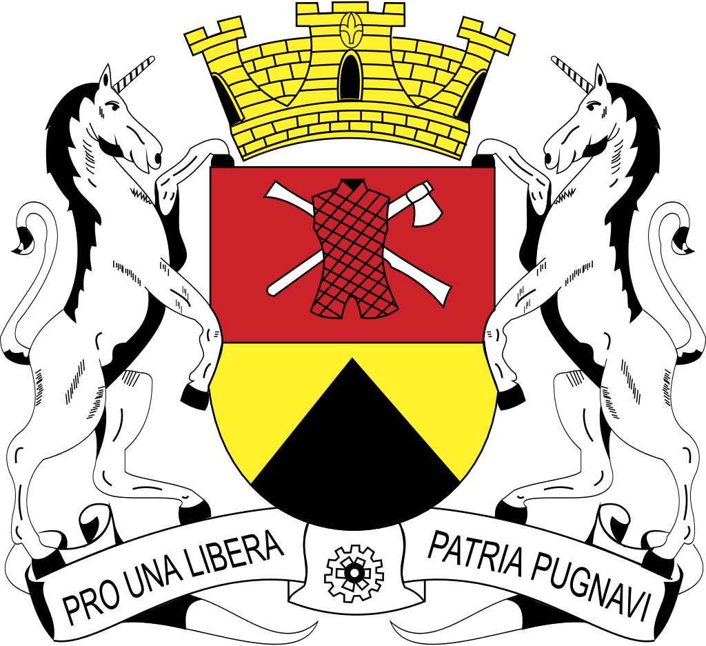
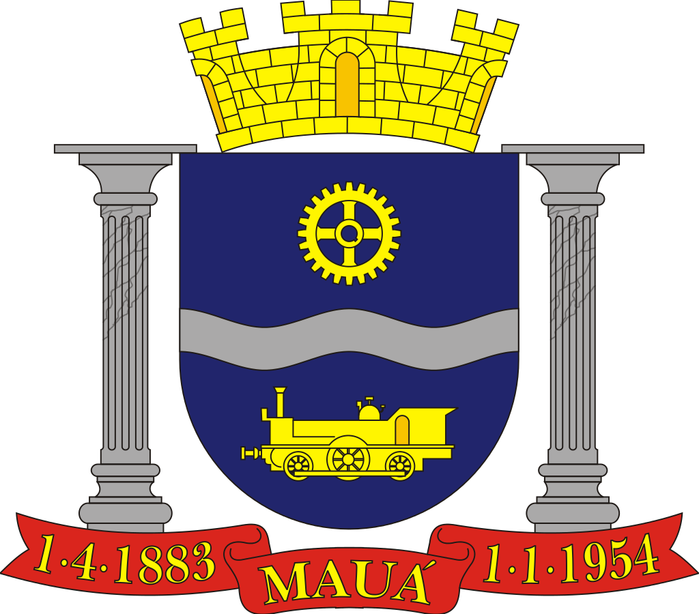

As 10 icônicas cidades de São Paulo
São Paulo é um município brasileiro, capital do estado homônimo e principal centro financeiro, corporativo e mercantil da América do Sul. É a cidade mais populosa do Brasil, do continente americano, da lusofonia e de todo o hemisfério sul. São
Paulo é a cidade brasileira mais influente no cenário global, sendo, em 2016, a 11.ª cidade mais globalizada do planeta, recebendo a classificação de cidade global alfa, por parte do Globalization and World Cities Study Group & Network (GaWC).
O lema da cidade, presente em seu brasão oficial, é Non ducor, duco, frase latina que significa "Não sou conduzido, conduzo".
Fundada em 1554 por padres jesuítas, a cidade é mundialmente conhecida e exerce significativa influência nacional e internacional, seja do ponto de vista cultural, econômico ou político. Conta com importantes monumentos, parques e museus, como
o Memorial da América Latina, o Museu da Língua Portuguesa, o Museu do Ipiranga, o MASP, o Parque Ibirapuera, o Jardim Botânico de São Paulo e a avenida Paulista, e eventos de grande repercussão, como a Bienal Internacional de Arte, o Grande
Prêmio do Brasil de Fórmula 1, a São Paulo Fashion Week e a Parada do Orgulho LGBT.

Conheça nossa bandeira e hino.
1 - Osasco

Osasco é um município brasileiro localizado na Região Metropolitana de São Paulo, no estado de São Paulo, no Brasil. Nascido como um bairro da capital paulista no final do século XIX, tornou-se município emancipado após um plebiscito em 1962.
Ocupa uma área de 64,954 km², e sua população estimada no ano de 2019 era de 698 418 habitantes, sendo o 8º mais populoso do estado de São Paulo
Possui importante atividade econômica nos setores industrial, comercial e de serviços. Conforme o censo do IBGE, com dados de 2017, Osasco possui o 6º maior Produto Interno Bruto do Brasil e o 2º maior do Estado de São Paulo, ficando à frente
de muitas capitais estaduais brasileiras, como Salvador, Fortaleza e Recife, sendo a cidade não capital com o mais alto PIB da nação naquele ano.
O lema da cidade é Urbs labor, frase latina que significa Cidade trabalho, e seu padroeiro é Santo Antônio, sendo 13 de junho (data comemorativa do santo) feriado municipal.
Conheça nossa bandeira e hino.
2 - Santos

Santos é um município portuário sede da Região Metropolitana da Baixada Santista, localizado no litoral do estado de São Paulo, no Brasil. Com a maior participação econômica da citada região, abriga o maior porto da América Latina, o principal
responsável pela dinâmica econômica da cidade ao lado do turismo, da pesca e do comércio, ocupando a 5ª colocação entre as não capitais mais importantes para a economia brasileira e 10ª colocada segundo a qualidade de vida. A cidade é sede
do poder executivo paulista todo dia 13 de junho (capital simbólica de São Paulo) e não apenas sede de diversas instituições de ensino superior como também da mais antiga entidade geral estudantil do Brasil, o Centro dos Estudantes de Santos.
Santos possui uma economia crescente. Em 2016, a cidade era a 33ª mais rica do país, com produto interno bruto de 21 954 556,74 de reais. Durante um bom tempo, sua economia centrou-se na comercialização do café; em 1922 foi inaugurada a Bolsa
Oficial do Café, onde eram negociadas riquezas do mercado cafeeiro para o país, e que resultou no atual Museu do Café abrigado no local atualmente conhecido como Centro Histórico, espaço que promove exposições sobre a trajetória do produto
pelo Brasil e pela cidade e que é decorado com obras do artista Benedito Calixto.
Conheça nossa bandeira e hino.
3 - Guarulhos

Guarulhos é um município da Região Metropolitana de São Paulo, no estado de São Paulo, no Brasil. É a segunda cidade mais populosa do estado, a 13ª mais populosa do Brasil e a 53ª mais populosa do continente americano, com 1 392 121 habitantes,
segundo estimativa do Instituto Brasileiro de Geografia e Estatística (IBGE) para 1.º de julho de 2020.
Guarulhos foi fundada em 8 de dezembro de 1560, pelo padre jesuíta Manuel de Paiva, com a denominação de Nossa Senhora da Conceição. Sua origem está ligada à de cinco outros povoamentos que tinham, como principal objetivo, defender o povoado de
São Paulo dos Campos de Piratininga contra um possível ataque dos Tamoios.
É a cidade não capital de estado mais populosa do Brasil e é considerada a 12ª cidade mais rica do Brasil. Em 2016, registrou um Produto Interno Bruto (PIB) na ordem de 53,9 bilhões de reais, o que representou mais de 1% de todo PIB brasileiro
na época. além de deter o 4º maior produto interno bruto (PIB) de seu estado e o 12º maior do país.
Conheça nossa bandeira e hino.
4 - Campinas

Campinas é um município brasileiro no interior do estado de São Paulo, Região Sudeste do país. Pertence à microrregião e mesorregião homônimas, distante 99 km a noroeste de São Paulo, capital estadual. Ocupa uma área de 797,6 km², da qual 238,323
km² estão em perímetro urbano e os 559,277 km² restantes constituem a zona rural. Em 2020, sua população foi estimada pelo Instituto Brasileiro de Geografia e Estatística em 1 213 792 habitantes, sendo o terceiro município mais populoso de
São Paulo (ficando atrás de Guarulhos e da capital) e o décimo quarto de todo o país. Aparece em quinto lugar entre 100 municípios analisados pelo Índice das Melhores e Maiores Cidades Brasileiras, o BCI100, elaborado pela Delta Economics
& Finance com base nos dados do Censo 2010 do IBGE e do Ideb.
Campinas foi fundada em 14 de julho de 1774. Entre o final do século XVIII e o começo do século XX, a cidade teve o café e a cana-de-açúcar como importantes atividades econômicas. Porém, desde a década de 1930, a indústria e o comércio são as
principais fontes de renda, sendo considerada um polo industrial regional. Atualmente, é formada por seis distritos, além da sede, sendo, ainda, subdividida em 14 administrações regionais, cinco regiões e vários bairros.
Décima cidade mais rica do Brasil, hoje é responsável por pelo menos 15% de toda a produção científica nacional, sendo o terceiro maior polo de pesquisa e desenvolvimento brasileiro. Tem também diversos atrativos turísticos, com valor histórico,
cultural ou científico, como museus, parques e teatros. A Orquestra Sinfônica Municipal de Campinas, fundada em 1974, é considerada uma das principais do país.
Conheça nossa bandeira e hino.
5 - São Bernardo do Campo

São Bernardo do Campo é um município brasileiro do estado de São Paulo, na Mesorregião Metropolitana de São Paulo e microrregião de São Paulo. Pertence a Zona Sudeste da Grande São Paulo, em conformidade com a lei estadual nº 1.139, de 16 de junho
de 2011 e, consequentemente, com o Plano de Desenvolvimento Urbano Integrado da Região Metropolitana de São Paulo (PDUI), e também à região não-oficial do Grande ABC.
A área total do município é de 409,88 km² e sua população de acordo com estimativas do Instituto Brasileiro de Geografia e Estatística (IBGE) de 2018, é de 833 240 habitantes, o que resulta em uma densidade demográfica de 2024,33 hab/km². O município
é formado pela sede e pelo distrito de Riacho Grande.
A origem da cidade remonta a 1553, quando é oficializada a Vila de Santo André da Borda do Campo, fundada pelo português João Ramalho, junto a seu sogro Tibiriçá. A Vila foi o primeiro núcleo de povoamento do território brasileiro fora do litoral.
O nome do município provém da Fazenda de São Bernardo, fundada pelos monges beneditinos em 1717, origem da ocupação moderna da cidade.
Conheça nossa bandeira e hino.
6 - São José dos Campos

São José dos Campos é um município brasileiro no interior do estado de São Paulo. Está situado no Vale do Paraíba Paulista, a leste da capital do estado, distando desta cerca de 81 km. É sede da Região Metropolitana do Vale do Paraíba e Litoral
Norte e ocupa uma área de 1 099,409km², da qual 353,9 km² estão em perímetro urbano. Em 2020, sua população foi estimada pelo IBGE em 729 737 habitantes, sendo o quinto mais populoso de São Paulo e o 23.º de todo o país, além de ser o segundo
município mais populoso do interior do Brasil, ficando atrás somente de Campinas. O município está integrado — junto com as regiões metropolitanas de São Paulo, Campinas, Sorocaba e Baixada Santista — ao Complexo Metropolitano Expandido, uma
megalópole que ultrapassa os trinta milhões de habitantes (cerca 75% da população paulista) e que é a primeira aglomeração urbana do tipo no hemisfério sul.
São José dos Campos foi elevado à categoria de vila em 1767. No decorrer do século XIX a agricultura desenvolveu-se no município, com destaque para o café, principalmente a partir da década de 1880. Porém na segunda metade do século XX a indústria
ganhou força, sendo este o momento que a cidade descobre sua vocação para a área da tecnologia.
O município é a sede de importantes empresas, como: Panasonic, Johnson & Johnson, Ericsson, Philips, Ball Corporation, General Motors (GM), Petrobras, Monsanto, Embraer (sede), entre outras. Possui também relevantes centros de ensino e pesquisas,
tais como: o DCTA, o INPE, o Cemaden, o IEAv, o IAE, o IFI, a UNESP, o ITA, a FATEC, a UNIVAP, a Anhanguera, o IP&D e a UNIFESP, sendo um importante tecnopolo de material bélico, metalúrgico e sede do maior complexo aeroespacial da América
Latina. O Parque Tecnológico de São José dos Campos, o maior do tipo no país, sedia unidades de pesquisa de grandes empresas, sendo a única cidade do mundo com centros de pesquisas das três maiores fabricantes mundiais de aeronaves, a Embraer,
a Boeing e a Airbus.
Conheça nossa bandeira e hino.
7 - Santo André

Santo André é um município brasileiro da Região do Grande ABC, localizado na Zona Sudeste da Grande São Paulo, parte da Região Metropolitana de São Paulo, em conformidade com a lei estadual nº 1.139, de 16 de junho de 2011 e, consequentemente,
com o Plano de Desenvolvimento Urbano Integrado da Região Metropolitana de São Paulo (PDUI).
Sua população estimada para 1.º de julho de 2020 era de 721 368 habitantes, ocupando uma área de 175,782km².
Santo André é a décima quinta cidade brasileira mais desenvolvida, e a oitava cidade mais desenvolvida do estado de São Paulo, segundo a ONU. É também a quinta melhor cidade do país onde criar filhos.
Conheça nossa bandeira e hino.
8 - Ribeirão Preto

Ribeirão Preto é um município brasileiro sede da Região Metropolitana de Ribeirão Preto (RMRP), no interior do estado de São Paulo, Região Sudeste do país. Pertence à Mesorregião e Microrregião de Ribeirão Preto, localizando-se a nordeste do estado,
distando da Capital do Estado cerca de 315 km. Ocupa uma área de 650,916 km², sendo que 127,309 km² estão em perímetro urbano. Com 711 825 habitantes, é a nona cidade mais populosa do País sem contar as capitais – no geral é a 27ª e no Estado
é a sétima, incluindo a capital paulista, segundo estimativa populacional calculada pelo IBGE para 2020, quando a população ribeirão-pretana cresceu 1,21% em relação ao valor do ano anterior. Este índice é superior ao nacional, de 0,77% e
também está acima do estadual, de 0,81%.
A cidade tem uma temperatura média anual de 23,2 °C e na vegetação original do município predomina a mata Atlântica. Com 99,7% de seus habitantes vivendo na zona urbana, o município contava em 2009 com 95 estabelecimentos de saúde (SUS). O seu
Índice de Desenvolvimento Humano (IDH) em 2010 era de 0,800, considerando-se assim como elevado em relação ao país, sendo o vigésimo segundo maior do estado. Várias rodovias ligam Ribeirão Preto a diversas cidades paulistas, tais como a Rodovia
Anhanguera e a Rodovia Cândido Portinari, havendo ainda disponibilidade de ferrovias e um aeroporto, denominado Doutor Leite Lopes.
Conheça nossa bandeira e hino.
9 - Sorocaba

Sorocaba é um município brasileiro no interior do estado de São Paulo. É a quarta mais populosa do interior paulista (precedida por Campinas, São José dos Campos e Ribeirão Preto) e a mais populosa da região sudeste paulista com uma população
de 687.357 habitantes, estimada pelo IBGE para 2020, sendo uma capital regional.
Possui uma área de 450,38 km². O município está integrado — junto com a Grande São Paulo, a Região Metropolitana de Campinas a Região Metropolitana da Baixada Santista e a Região Metropolitana do Vale do Paraíba e Litoral Norte — ao Complexo Metropolitano
Expandido, uma megalópole que ultrapassa os 30 milhões de habitantes (cerca 75% da população paulista) e que é a primeira aglomeração urbana do tipo no hemisfério sul. A Região Metropolitana de Sorocaba é composta por 26 municípios que somam
aproximadamente 2,06 milhões de habitantes.
A cidade é um importante polo industrial do estado de São Paulo e do Brasil, sendo que sua produção industrial chega a mais de 120 países, atingindo um PIB acima dos R$ 32 bilhões, o décimo nono maior do país, a frente de capitais como São Luís,
Belém, Vitória, Natal e Florianópolis. As principais bases de sua economia são os setores de indústria, comércio e serviços, com mais 22 mil empresas instaladas, sendo mais de duas mil delas indústrias.
Conheça nossa bandeira e hino.
10 - Mauá

Mauá é um município da Região Metropolitana de São Paulo, no estado de São Paulo, no Brasil. Pertence à região do ABC Paulista, na Zona Sudeste da Grande São Paulo, em conformidade com a lei estadual nº 1.139, de 16 de junho de 2011 e, consequentemente,
com o Plano de Desenvolvimento Urbano Integrado da Região Metropolitana de São Paulo (PDUI). A densidade demográfica é de 6 463,7 habitantes por quilômetro quadrado. Porém a densidade urbana é bem maior, já que um terço do município é área
industrial e 10% pertence à área rural e ao Parque Estadual da Serra do Mar. Em 2014, era o 20° município do estado em produto interno bruto, e em 2018 o 11º em população, com 468 148 habitantes. Mauá está entre as 50 cidades mais populosas
de todo o Brasil.
Conheça nossa bandeira e hino.
Newsletter
Receba nossas notícias por e-mail.